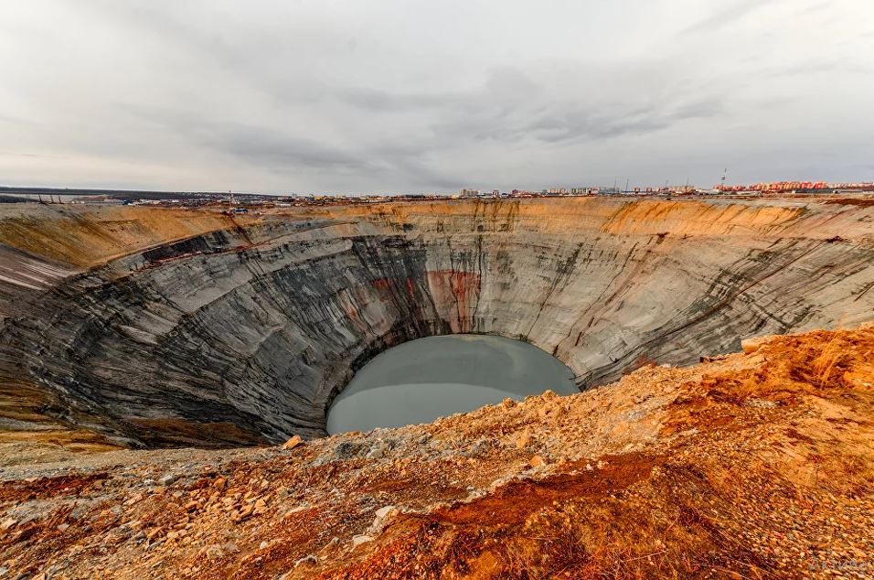

Алмазная шахта «Мир», Якутия

Рукотворный алмазный карьер неспроста назвали «Мир»: обнаружив источник, геологи передали в Москву закодированную радиограмму: «Закурили трубку мира, табак отличный». А почему трубку? Всё просто: именно так называются у геологов подобные месторождения. В наши дни шахта уже не действующая, и у туристов есть шанс взглянуть на карьер колоссальных размеров — полтора километра в диаметре! Якуты верят, что алмазные залежи в их землях связаны с вмешательством свыше: однажды было так холодно, что парящее по небу божество отморозило руку и выронило на землю целый мешок алмазов.